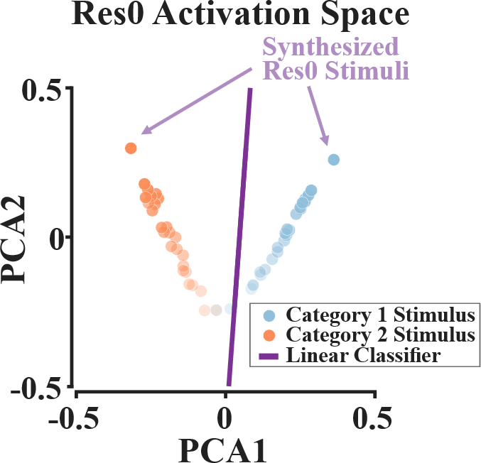
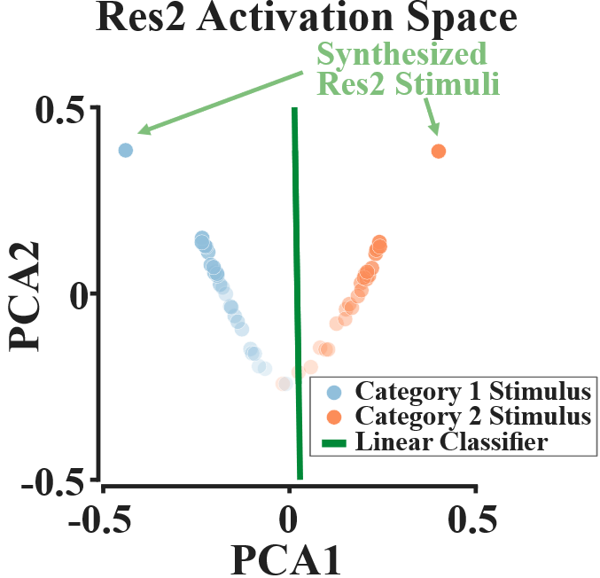

Hierarchical control of visual perceptual learning with model-synthesized stimuli
A model of the primate dorsal visual stream generates pairs of motion videos that differ at one chosen stage of the hierarchy. We use them to ask where perceptual learning happens.
The question
People get better at visual tasks with practice, and the improvement often stays tied to the stimulus or the spot in the visual field that was trained. One leading explanation is that practice changes how the brain reads out sensory signals, while the signals themselves stay put. What has been hard to test is which stage of the visual hierarchy gets read out, because ordinary stimuli drive many stages at once.
We used DorsalNet, a deep network trained to estimate self-motion from video, whose layers line up with V1, MT and MST along the primate dorsal pathway. For an early layer (res0) and a late layer (res2) we synthesized a pair of motion videos that the layer tells apart as strongly as possible. Human observers train on one kind of pair and are then tested at a new retinal location and on the other kind. Readout models built on DorsalNet run the same experiment in silico.
How a stimulus pair is made
The same recipe runs once for res0 and once for res2.
- Start from noiseOne random 11-frame video is copied into two. One copy is labeled category 1 and the other category 2.
- Optimize against the layerFor 2,000 Adam iterations, the two videos are pushed apart along a fixed linear direction in the target layer's activation space (the second principal component of its activations). The network never changes. Random jitter and rescaling keep the patterns robust.
- Make them displayableThe videos are smoothed, masked to a soft-edged circle, trimmed to 9 frames, matched in contrast and luminance, and converted to grayscale so that observers can only use motion.
- Make the dissimilarity levelsA second noise pair is optimized toward the activations of the finished pair and saved every 50 iterations. The result is a series that runs from near-identical and noisy to the optimum pair.
Reading the galleries
Each card is one pair. The optimum pair comes first, then level 25 (closest to the optimum) down to level 1 (noisiest). Hover over any video to enlarge it.
Res0 stimuli
These pairs differ most in DorsalNet's first residual stage, which responds to small patches of the image. They differ mainly in local motion structure.
The plot shows how the optimization pulls the two categories apart in this layer. Noisy pairs sit close together near the classifier line, and the fully optimized pair sits far out on either side.

Loss
Res2 stimuli
These pairs differ most in the third residual stage, where units pool motion over larger regions of the visual field.
In this layer the noisy pairs also sit near the classifier line, and the fully optimized pair sits far out on either side.

Loss
Regenerate the stimuli
The code for stimulus synthesis and for the readout models is on GitHub.